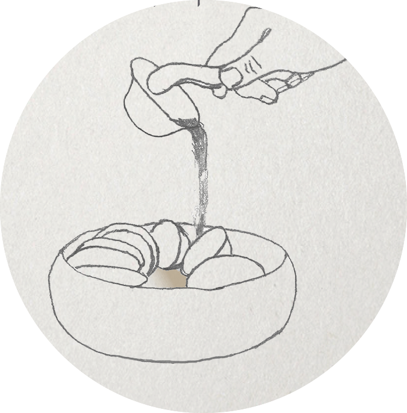
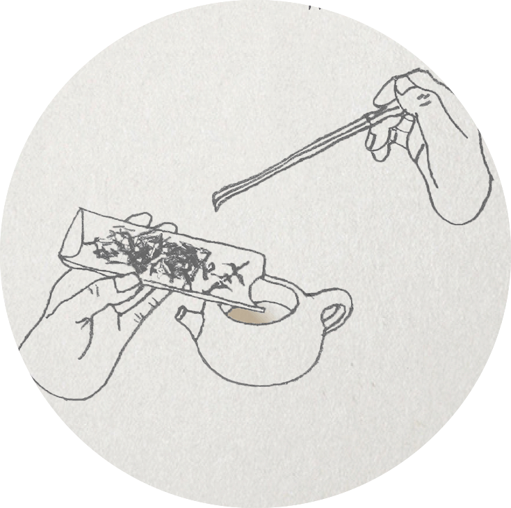

冲 茶

白鹤沐浴
潮州土语说是“烧盅热罐”，这是冲功夫茶中的功夫要点。这个步骤一方面是为了表示对客人的尊重，另一方面就是提升杯具的温度，可以提升茶叶的口感。

送佛入宫
将茶叶分粗细后，用茶匙将茶荷或赏茶盘中的茶叶轻轻拨入壶中，粗者置于底、中者置于中、细者置于上，茶叶不可装得太满，仅七八成即可。

悬壶高冲
高提水壶，让水直泻而下，接着利用手腕的力量，上下提拉注水，反复三次，可以让茶叶在水的激荡下，充分浸润，以利于色、香、味的充分发挥。这一冲泡手法雅称凤凰三点头。凤凰三点头不仅是为了泡茶本身的需要，且显示冲泡者的姿态优美。三点头像是对客人的鞠躬行礼，是对客人表示敬意，同时也表达了对茶的敬意。

烧盅热罐
盖好壶盖，再用滚水淋于壶上，就叫淋壶。其作用一是使热气内外夹攻，迫使茶香尽快挥发，追加热气；二是稍停片刻，罐身水分全干，即是茶熟；三是冲去壶外茶沫。

春风拂面
冲水一定要满，茶壶是否“三山齐”，水平面如何，这时要见功效了，好茶壶水满后茶沫浮起，绝不溢出，提壶盖，从壶口轻轻刮去茶沫，然后盖定。

韩信点兵
用循环斟茶法，将壶中之茶均匀的分入每一杯中，使杯中之茶的色、味一致。

敬奉香茗
主人将斟毕的茶，双手依长幼次策奉于客前，先敬首席，然后左右佳宾，自己最末。